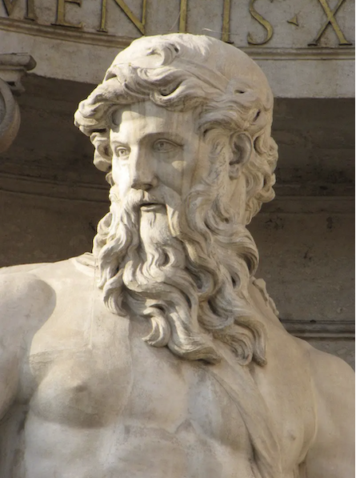

The primordial deities were the first generation of gods and goddesses to emerge after the creation of the cosmos. These deities represented the fundamental forces and physical foundations of the world and were generally not actively worshipped, as they, for the most part, were not given human characteristics; they were instead personifications of places or abstract concepts. Hesiod, in his Theogony, which could be considered the "standard" creation myth of Greek mythology, considers the first beings (after Chaos) to be Gaia, Tartarus, Eros and Nyx. Gaia and Uranus in turn gave birth to the Titans, and the Cyclopes. Scholars dispute the meaning of the primordial deities in the poems of Homer and Hesiod. Since the primordials give birth to the Titans, and the Titans give birth to the Olympians, one way of interpreting the primordial gods is as the deepest and most fundamental nature of the cosmos.
Gaia
- Other Name(s): Ge, Gaea
- Roman Name: Terra
Hesiod's Theogony tells how, after Chaos, "wide-bosomed" Gaia (Earth) arose to be the everlasting seat of the immortals who possess Olympus above. And after Gaia came "dim Tartarus in the depth of the wide-pathed Earth", and next Eros the god of love. Hesiod goes on to say that Gaia brought forth her equal Uranus (Heaven, Sky) to "cover her on every side". Gaia also bore the Ourea (Mountains), and Pontus (Sea), "without sweet union of love" (i.e., with no father).
Gaia took part in the battles known as the Titanomachy. Because Cronus had learned from Gaia and Uranus that he was destined to be overthrown by one of his children, he swallowed each of the children born to him by his Titan older sister, Rhea. But when Rhea was pregnant with her youngest child, Zeus, she sought help from Gaia and Uranus. When Zeus was born, Rhea gave Cronus a stone wrapped in swaddling-clothes in his place, which Cronus swallowed, and Gaia took the child into her care. With the help of Gaia's advice, Zeus defeated the Titans But afterwards, Gaia, in union with Tartarus, bore the youngest of her sons Typhon, who would be the last challenge to the authority of Zeus.
Uranus

- Other Name(s): Ouranos
- Roman Name: Caelus
Other sources give other genealogies. In the lost epic poem the Titanomachy, Uranus was apparently the son of Aether, while according to others Uranus was the son of one "Acmon". According to Orphic texts, Uranus (along with Gaia) was the offspring of Nyx (Night) and Phanes. The poet Sappho (c. 630 – c. 570 BC), was said to have made Uranus the father of Eros, by either Gaia, according one source, or Aphrodite, according to another.